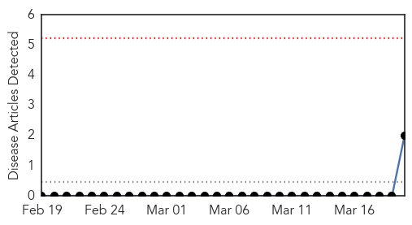
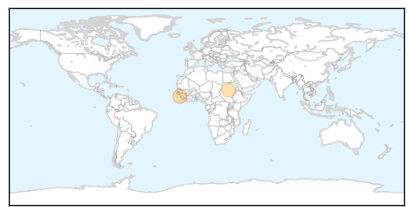
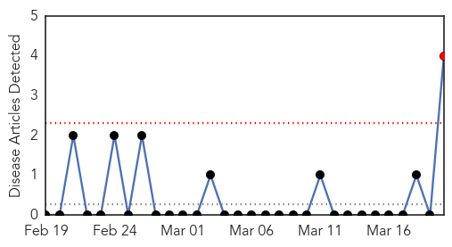
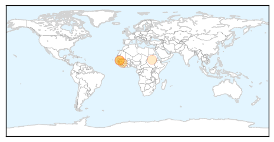
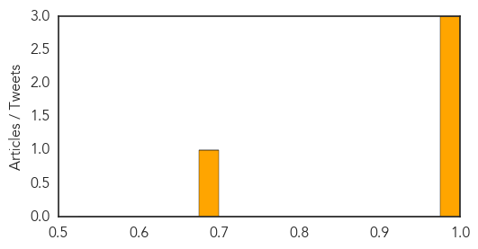

Hemmorhagic Fever
30-Day Web Trend
0 alerts, 0 warnings

30-Day Twitter Trend
0 alerts, 0 warnings

Article Locations
Article Confidences

Top Articles:
Top Tweets:
-
No tweets found for Mar 20, 2014
Ebola
30-Day Web Trend
1 alerts, 0 warnings

30-Day Twitter Trend
0 alerts, 0 warnings

Article Locations
Article Confidences
Top Articles:
- 0.999
- Guinea Mystery Fever Outbreak: Mystery Fever Outbreak Left 23 Dead in Republic of Guinea
- 0.998
- Unexplained heamorrhagic fever kills 23 in Guinea
- 0.995
- Mystery hemorrhagic fever kills 23 in Guinea
- 0.676
- Group Led by Scripps Research Institute Scientist Wins Up to $28 Million from NIH to Find Best Proposed Ebola Treatment
Top Tweets:
-
No tweets found for Mar 20, 2014